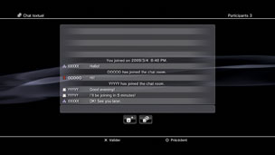

Amis > Chat textuel > Démarrage ou fermeture du chat textuel
Démarrage ou fermeture du chat textuel
Pour utiliser cette fonction, il peut être nécessaire de mettre à jour le logiciel système.
Vous pouvez utiliser le chat textuel avec des personnes de votre Liste d'amis.
Démarrage d'un chat textuel
1. |
Sélectionnez |
|---|---|
2. |
Sélectionnez |
|
|
|
3. |
Saisissez le nom du salon de chat textuel, puis sélectionnez [O.K.]. |
4. |
Sélectionnez les Amis que vous souhaitez inviter au chat, puis sélectionnez [O.K.]. |
|
 |
 (Démarrer nouveau chat).
(Démarrer nouveau chat). (Chat textuel).
(Chat textuel).
Conseils
- Vous devez être connecté à PlayStation®Network pour utiliser le chat textuel.
- Aucun message d'invitation de chat n'est envoyé pour le chat textuel.
- Un salon de chat textuel peut accueillir jusqu'à 16 personnes.
- La fonction de chat textuel n'est pas disponible si des restrictions relatives à son utilisation sont définies dans les paramètres du compte PlayStation®Network. Pour plus d'informations sur les paramètres de contrôle parental, consultez [À propos de XMB™] > [Utilisation des paramètres de contrôle parental] dans le présent mode d'emploi.
Participation à un salon de chat textuel
Si vous êtes invité à un salon de chat textuel, un message de notification s'affiche dans le coin supérieur droit de l'écran. Sélectionnez  (Salon de chat (textuel uniquement)) sous
(Salon de chat (textuel uniquement)) sous  (Amis), puis sélectionnez le salon de chat auquel vous souhaitez vous joindre.
(Amis), puis sélectionnez le salon de chat auquel vous souhaitez vous joindre.

Conseils
- Si [Ne pas afficher] est sélectionné dans [Messages de notification] sous
 (Paramètres) >
(Paramètres) >  (Paramètres système), les messages de notification ne s'affichent pas.
(Paramètres système), les messages de notification ne s'affichent pas. - Dans la plupart des jeux, vous pouvez participer à un chat textuel pendant la partie. Appuyez sur la touche PS de la manette sans fil, puis sélectionnez le salon de chat auquel vous souhaitez vous joindre sous (Amis) > (Salon de chat (textuel uniquement)). Appuyez sur la touche PS pour revenir à l'écran du jeu.
- Vous pouvez participer simultanément à trois salons de chat. Si vous rejoignez un quatrième salon de chat, vous quittez automatiquement celui que vous avez rejoint en premier.
- Il est possible d'afficher jusqu'à 20 salons de chat dans (Salon de chat (textuel uniquement)). S'il y a plus de 20 salons de chat, les plus anciens sont automatiquement supprimés lorsque vous en ouvrez de nouveaux.
Fermeture d'un salon de chat
Appuyez sur la touche  pour fermer l'écran de chat textuel. Sélectionnez le salon de chat que vous souhaitez quitter, appuyez sur la touche
pour fermer l'écran de chat textuel. Sélectionnez le salon de chat que vous souhaitez quitter, appuyez sur la touche  , puis sélectionnez [Partir] dans le menu d'options.
, puis sélectionnez [Partir] dans le menu d'options.
Conseil
Si vous mettez le système PS3™ hors tension ou si vous vous déconnectez de PlayStation®Network, vous quittez automatiquement le salon de chat. Si vous rejoignez à nouveau un salon de chat après l'avoir quitté, l'enregistrement des entrées de chat envoyées lors de votre absence ne s'affiche pas.
Suppression d'un salon de chat
Sélectionnez le salon de chat que vous souhaitez supprimer, appuyez sur la touche , puis sélectionnez [Supprimer] dans le menu d'options.
Utilisation du panneau de configuration
Vous pouvez exécuter les opérations suivantes à l'aide du panneau de configuration de l'écran de chat textuel.
 |
Inviter un ami | Pour inviter un ami à se joindre à un salon de chat textuel |
|---|---|---|
 |
Liste des participants | Pour afficher la liste des participants au salon de chat |